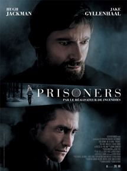

My Favorite movies

|
Gone GirlÀ l’occasion de son cinquième anniversaire de mariage, Nick Dunne signale la disparition de sa femme, Amy. Très vite, les mensonges de Nick et son étrange comportement amènent tout le monde à se poser la même question : a-t-il tué sa femme ? |
|  |
PrisonersDans la banlieue de Boston, deux fillettes de 6 ans, Anna et Joy, ont disparu. Le détective Loki privilégie la thèse du kidnapping suite au témoignage de Keller, le père d’Anna. |